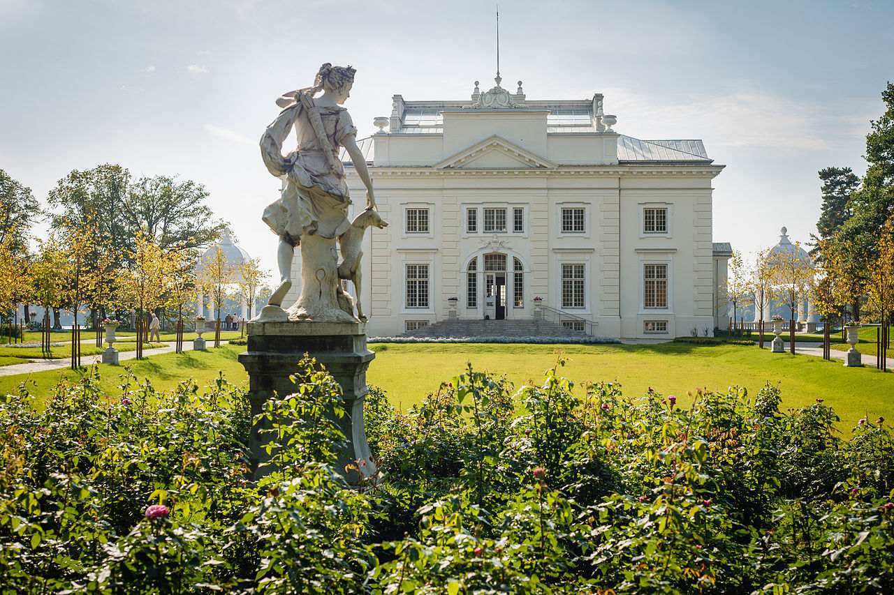
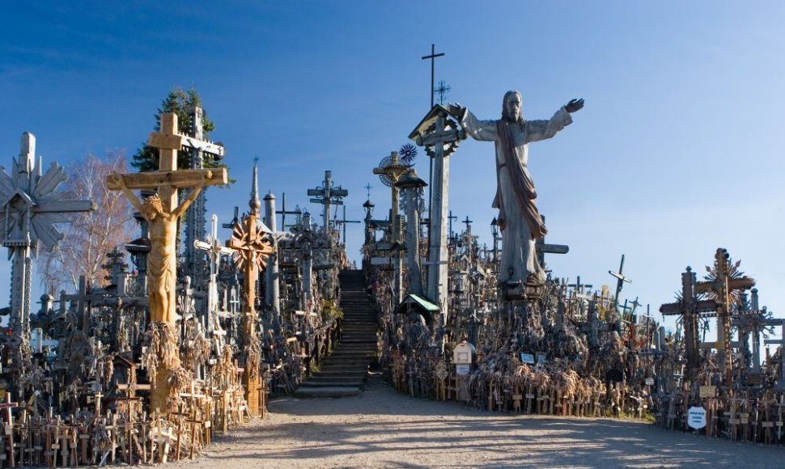

Lankytinos vietos dažnai palieka mums nuostabių ir džiaugsmingų prisiminimų. Aplink po visą Lietuvą galima pamatyti daugybe pažintinių takų, regioninių parkų. Lietuva dažnai pasižymi savo nuostabiais gamtos vietų takais, parkais, visgi tai nėra vienintelės vietos kur kiekvienas žmogus yra pilnai laukiamas. Nuo įspūdingų muziejų Kauno ar Vilniaus miestuose ar dar kuriame iš Lietuvos krašto miestų, iki jūros pakrančių, upių ir ežerų.




YPATINGOS Lietuvos VIETOS
Užutrakio dvaras
Trakai
Užutrakio dvaras - dvaras, stovintis prie Galvės ežero, Užutrakyje (Trakai). Kraštovaizdžio architektūros draustinis (nuo 1993 m.).